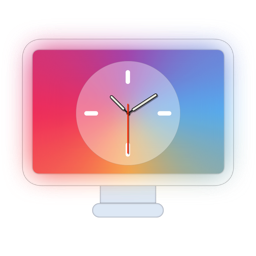
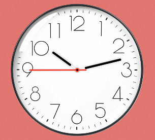
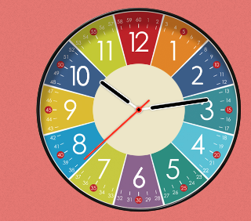
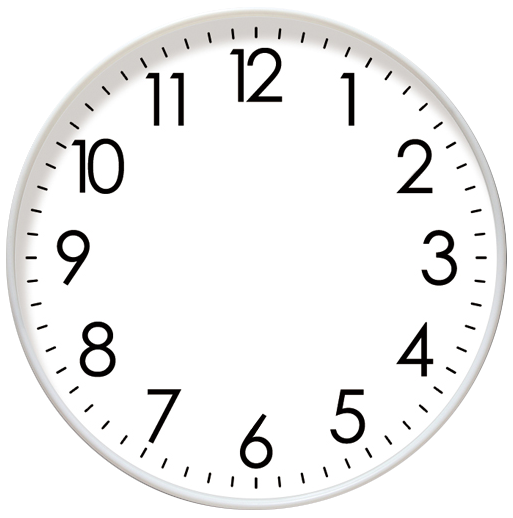
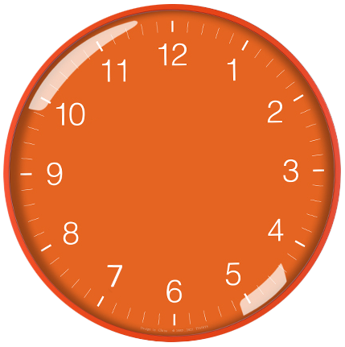
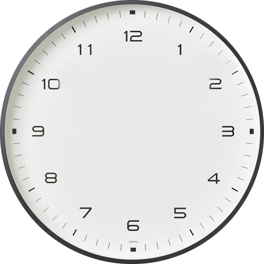
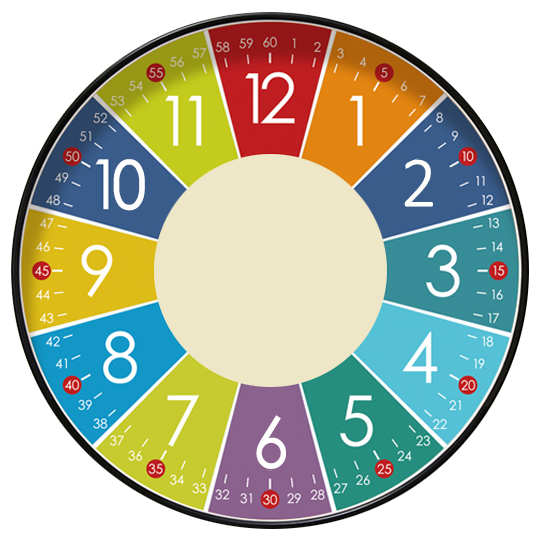
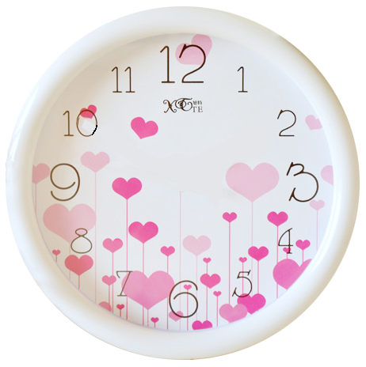
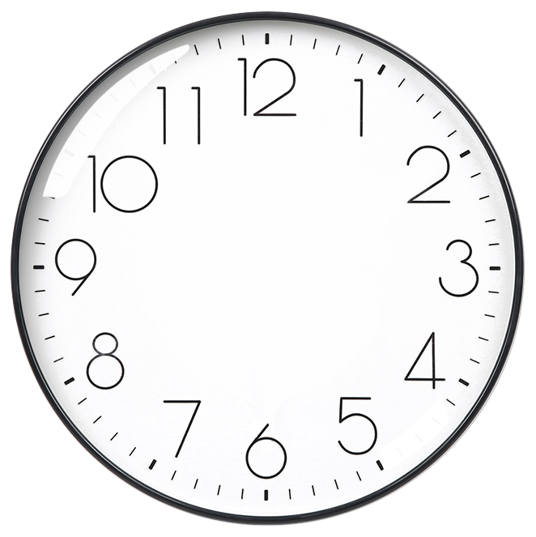
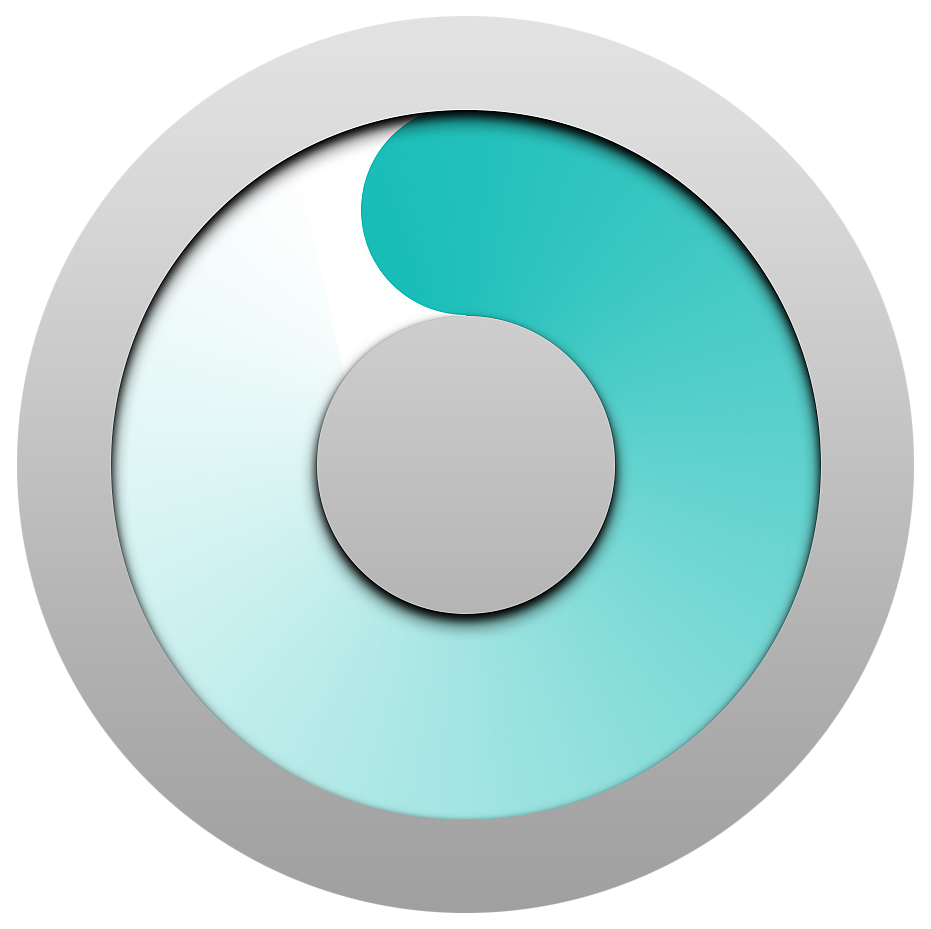

桌面时钟秀

功能介绍
强大的桌面时钟
 
一个可以挂在桌面的时钟，你可以把它放到任何位置
设置它的显示级别，让它可以悬浮在窗口之上
你可以为它设置一个背景颜色
不，你不喜欢单调的背景颜色，那就设置一个背景图片吧，家人照片、风景或你的宠物，只要你细化，随心所欲
如果嫌它碍眼，可以设置一个透明度，也是个不错的选择
我想修改指针的颜色，没问题！你可以的，时针、分钟和秒钟，随你
屏幕那么大，我想要个大一点的时钟..你可以试试
它只是个时钟，我不想让它影响我的任何鼠标操作，可以尝试“鼠标事件穿透”，它就像不存在一样...神奇！
还有还有...各种时钟刻度和数字样式、想开机就启动、夏令时任你选择
加入会员，支持我们，获得更好的体验
以下为大家提供几个表盘背景(右键可保存原始尺寸)
      